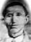
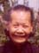
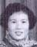
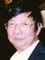

陳李彩眉 Lee Shee's Family


李德明 = 譚雪英
Lī Āk Mẽin = Hâm Xūt Yëin
Lǐ Démíng (1888 - 1/1/1936) = Tán Xuéyīng (4/10/1895-1/30/1979) |
李彩眉 = 陳惠常
Lī Tōi Mĩ = Chĩn Fì Sẽng
Lǐ Cǎiméi = Chén Huìcháng
Lee Shee = Fee S Chin |
李彩棠 = 朱在森
Lī Tōi Hõng = Jï Dòi Sẽim
Lǐ Cǎitáng = Zhū Zàisēn
Choi Tong Lee = Lun Chi |

李金灼 =
Lī Gïm Sēk =
Lǐ Jīnzhuó = |
李彩玉 = 譚福倫
Lī Tōi Ngùk = Hâm Fūk Lũn
Lǐ Cǎiyù = Tán Fúlún
Chui Yok Hum = Ferland Hum |
李彩芳 = 葉新贊
Lī Tōi Föng = Yêp Xïn Dän
Lǐ Cǎifāng = Yè Xīnzàn
Choi Fong Yip = Sun Dan Yip |
| |
|
李保生
Lī Bāo Säng
Lǐ Bǎoshēng
Andrew Lee |
|
|
李德明 Lī Āk Mẽin (Lǐ Démíng) and his family lived in the Village of 流蓢 (Liúláng).
Left to right are: 譚伯行 Pak H. Tam, Mrs. 譚錚銘 (詠儀 Vèin Ngĩ Yǒngyí Wing Yi) Jang Ming Tam (Pak's daughter-in-law), and Jang Ming's son (Brian). Brian's older sister, Naomi, is not here. Pak H. Tam is related to 譚雪英 Tán Xuéyīng (Hâm Xūt Yëin).

Left to right are: 陳柏泉 Pak Tun Chan, Mrs. Pak Tun Chan, Sherman Chan, and Jenny Tong Chan.
Pak Tun Chan is the son of 陳顯煥 Hien Fueng Chan and 陳李美玉 Mi Nguk Lee. Mi Nguk Lee came from 流蓢 (Liúláng).
Pak Tun Chan's wife is 陳黃比玲 Bi Ling Huang Chan.
Sherman Chan 陳漢宗 is the son of Pak Tun Chan. Jenny Tong Chan 陳童朝婕 is Sherman Chan's wife. They were married in 2007. Jenny's parents are 趙志成, 童春香.

Left to right are: 李玉環 Nguk Van Lee (Yuk Wan Lee) , 朱李玉瑜 Nguk Yi Lee,
李錫胤 Sik Yin Lee, and Mrs. Sik Yin Lee.
Nguk Van Lee, Nguk Yi Lee, and Sik Yin Lee are siblings and are related to 李彩眉 Lee Shee Chin. They call her 姑 gü (pinyin gū). 李玉環 Nguk Van Lee's husband is Tam Sui Doo 譚瑞多. Their daughter Hedy Tam 譚超儀 married Mannix Chiu 趙萬新 in 1975. 譚李玉環 Nguk Van Lee's son Edmund Tam 譚超文 married Lyn Villegas 玲玲 in 2002. 朱李玉瑜 Nguk Yi Lee's husband is Jin Yeon Gee 朱振耀. Their son Kuen Gee 朱光權 married Mary Shu 舒雪菲 in 1979.
Jin Yuan Li 李金源 is also related to 李彩眉 Lee Shee Chin. He calls her 姑 gü (pinyin gū). His wife is Wei Qun Li 李黃惠坤. Their son Simon Li 李偉群 married Cindy S. F. Wu 伍淑芬 in 1996.